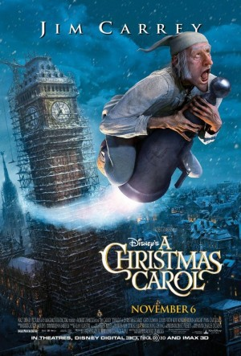

#5044 Eine Weihnachtsgeschichte
Alternativ: A Christmas Carol
 
 IMDB-Wertung: 6.8 / 10
IMDB-Wertung: 6.8 / 10  Metascore: 0
Metascore: 0 
Wie jeden Tag zeigt sich Ebenezer Scrooge auch am Heiligen Abend als Geizhals und Misanthrop, ob er nun seinen getreuen Buchhalter anblafft oder seinen gut gelaunten Neffen. Wenig später begegnet er dem Geist seines verstorbenen Geschäftspartners Joseph Marley, der im Jenseits den Preis für seine Herzlosigkeit bezahlt. Marley, der Scrooge ein ähnliches Schicksal ersparen möchte, erzählt ihm, dass er von drei Geistern Besuch bekommen wird. Und in der Tat: Die Geister der vergangenen, gegenwärtigen und künftigen Weihnacht entführen den alten Scrooge auf eine Reise, die ihm letztendlich die Augen öffnet. Dabei wird er mit Wahrheiten konfrontiert, die er am liebsten verleugnen möchte, doch er muss sein Herz öffnen und seinen jahrelangen Groll ablegen, bevor es zu spät ist.
Jahr: 2009
Dauer: 95 Minuten
FSK: 12
Land: USA Studio: Walt Disney Studios Motion PicturesTonspuren: DTS - ,
Untertitel: Deutsch,
Auflösung: 1080p (1920x800) Größe: 4147 MB
Genre: Drama, Fantasy, Animation/Trick, Familie, Weihnachten
Regisseur:  Robert Zemeckis
Robert Zemeckis
Drehbuch: Kan Shimozawa
Soundtrack:
Darsteller:
 Jim Carrey als Scrooge / Ghost of Christmas Past / Scrooge as a Young Boy / Scrooge as a Teenage Boy / Scrooge as a Young Man / Scrooge as a Middle Aged Man / Ghost of Christmas Present / Ghost of Christmas Yet to Come
Jim Carrey als Scrooge / Ghost of Christmas Past / Scrooge as a Young Boy / Scrooge as a Teenage Boy / Scrooge as a Young Man / Scrooge as a Middle Aged Man / Ghost of Christmas Present / Ghost of Christmas Yet to Come Steve Valentine als Funerary Undertaker / Topper
Steve Valentine als Funerary Undertaker / Topper Daryl Sabara als Undertaker's Apprentice / Tattered Caroler / Beggar Boy / Peter Cratchit / Well Dressed Caroler
Daryl Sabara als Undertaker's Apprentice / Tattered Caroler / Beggar Boy / Peter Cratchit / Well Dressed Caroler- Sage Ryan als Tattered Caroler
- Amber Gainey Meade als Tattered Caroler / Well Dressed Caroler
- Ryan Ochoa als Tattered Caroler / Beggar Boy / Young Cratchit Boy / Ignorance Boy / Young Boy with Sleigh
- Bobbi Page als Tattered Caroler / Well Dressed Caroler
 Ron Bottitta als Tattered Caroler / Well Dressed Caroler
Ron Bottitta als Tattered Caroler / Well Dressed Caroler- Sammi Hanratty als Beggar Boy / Young Cratchit Girl / Want Girl
- Julian Holloway als Fat Cook / Portly Gentleman #2 / Business Man #3
 Gary Oldman als Bob Cratchit / Marley / Tiny Tim
Gary Oldman als Bob Cratchit / Marley / Tiny Tim Colin Firth als Fred
Colin Firth als Fred Cary Elwes als Portly Gentleman #1 / Dick Wilkins / Mad Fiddler / Guest #2 / Business Man #1
Cary Elwes als Portly Gentleman #1 / Dick Wilkins / Mad Fiddler / Guest #2 / Business Man #1 Robin Wright als Fan / Belle
Robin Wright als Fan / Belle Bob Hoskins als Fezziwig / Old Joe
Bob Hoskins als Fezziwig / Old Joe Jacquie Barnbrook als Mrs. Fezziwig / Fred's Sister-In-Law / Well Dressed Caroler
Jacquie Barnbrook als Mrs. Fezziwig / Fred's Sister-In-Law / Well Dressed Caroler Lesley Manville als Mrs. Cratchit
Lesley Manville als Mrs. Cratchit- Molly C. Quinn als Belinda Cratchit
 Fay Masterson als Martha Cratchit / Guest #1 / Caroline
Fay Masterson als Martha Cratchit / Guest #1 / Caroline- Leslie Zemeckis als Fred's Wife
- Paul Blackthorne als Guest #3 / Business Man #2
- Michael Hyland als Guest #4
 Kerry Hoyt als Adult Ignorance
Kerry Hoyt als Adult Ignorance Julene Renee als Adult Want
Julene Renee als Adult Want Fionnula Flanagan als Mrs. Dilber
Fionnula Flanagan als Mrs. Dilber Raymond Ochoa als Caroline's Child
Raymond Ochoa als Caroline's Child- Callum Blue als Caroline's Husband
- Matthew Henerson als Poulterer
- Kelly Connolly als Dancer
- Beckie King als Dancer
- Tarah Paige als Dancer
- John Todd als Dancer
- Aaron Rapke als Well Dressed Caroler
 Sonje Fortag als Well Dressed Caroler / Fred's Housemaid
Sonje Fortag als Well Dressed Caroler / Fred's Housemaid- Aliane Baquerot als Dancer
- Seth Belliston als Dancer
- Troy Edward Bowles als Dancer
- Sam J. Cahn als Dancer
- John R. Corella als Dancer
- Kelly Crandall als Dancer
- Sheri Griffith als Dancer
- Keith Kuhl als Dancer
- Allison Leo als Dancer
- Patrick Wetzel als Dancer
Datei: X:\Kinder Disney HD\2000-2018\Weihnachtsgeschichte, Eine (2009, FSK12, 1920x800).mkv seit 22.12.2016
Festplatte: Kinder-Filme+Trick
 Es gibt insgesamt 45 Filme in der Gruppe 'Kinder Disney HD\2000-2018'
Es gibt insgesamt 45 Filme in der Gruppe 'Kinder Disney HD\2000-2018'